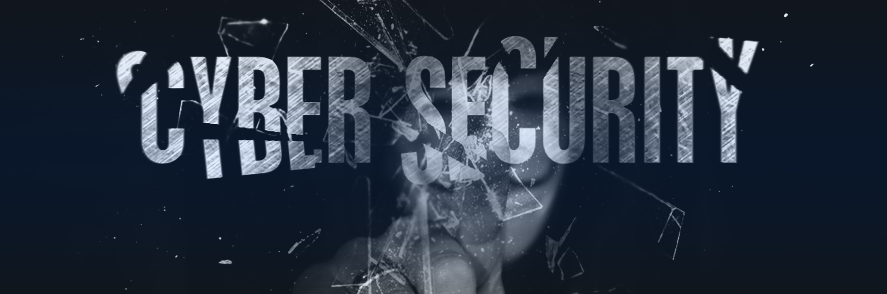
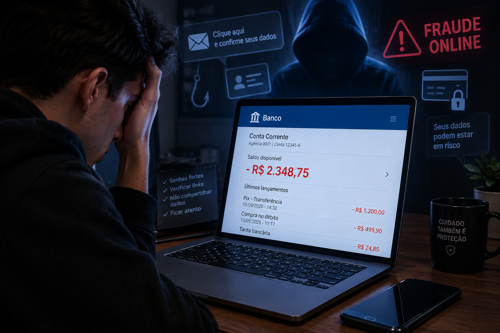
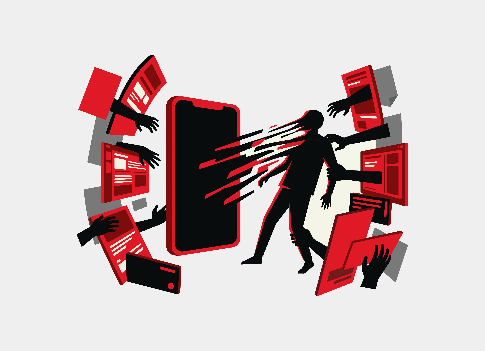
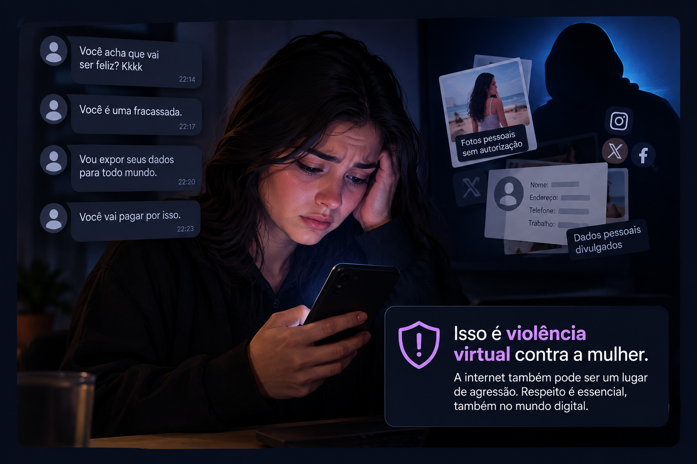
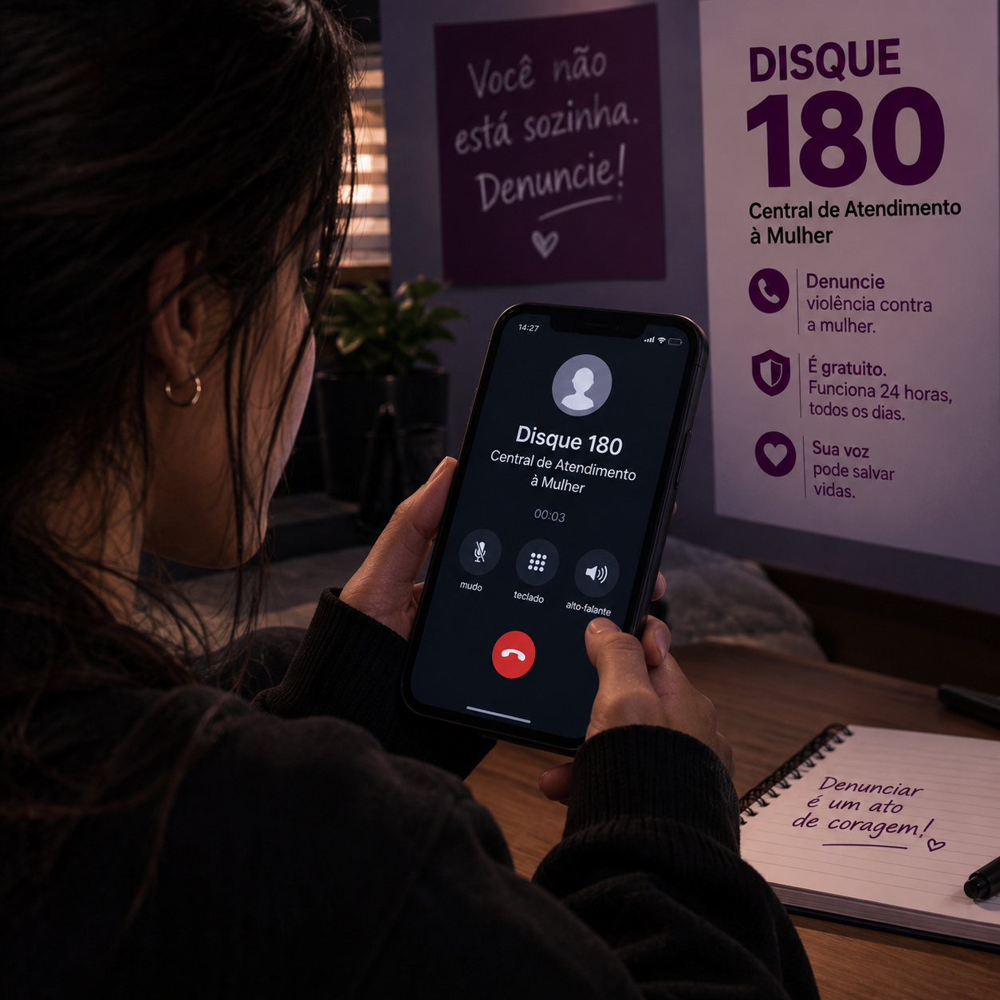
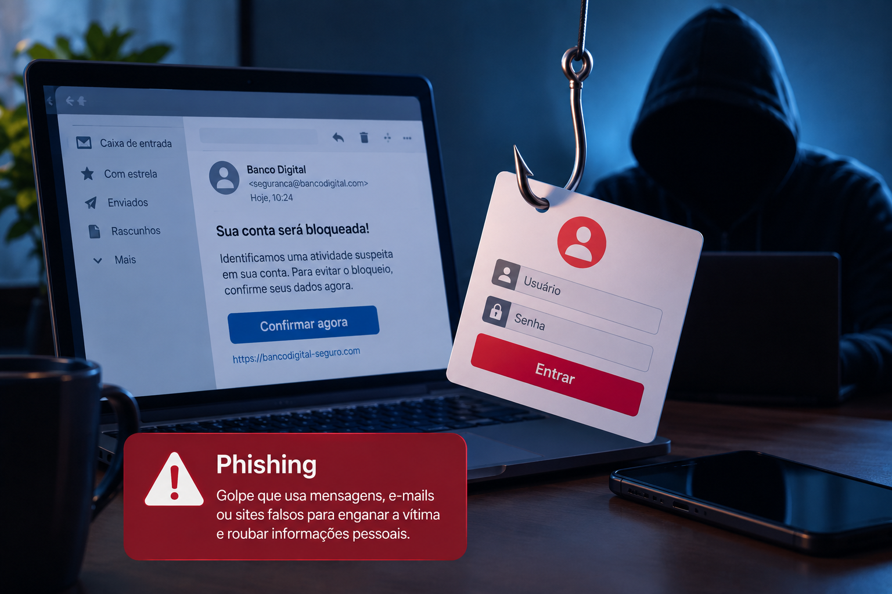
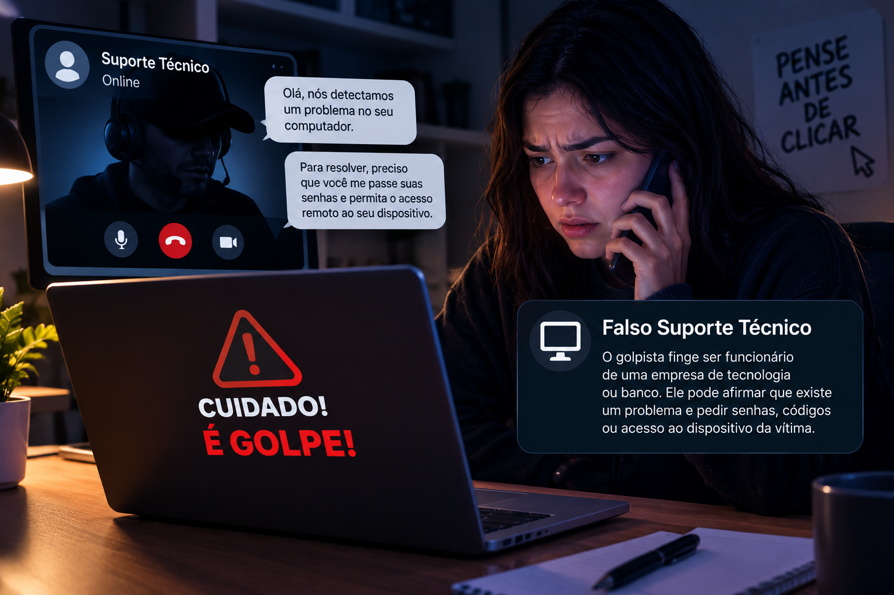

Proteção, Consciência e Cidadania Digital
Voltada a educar, prevenir golpes de engenharia social e proteger diferentes públicos no ciberespaço.

Crimes cibernéticos no Brasil.
Crescimento Alarmante
Crescimento expressivo no volume total de crimes virtuais registrados no país, impulsionado por golpes via Pix e engenharia social.

Medo constante de fraudes.
Insegurança Digital
Mais de 8 em cada 10 brasileiros relatam receio diário de cair em golpes bancários, clonagens de WhatsApp e estelionatos digitais.
Vítimas entre 16 e 29 anos.
Jovens Lideram
Por estarem hiperconectados e realizarem transações rápidas em redes sociais, jovens superam idosos (16%) em número de incidentes.
Violência contra mulheres
Ataques de Gênero
Aumento em denúncias de misoginia, perseguição digital, vazamentos não consensuais e deepfakes geradas por IA.

🎯 Cautela e Prevenção
Principais Recomendações
A segurança na internet é uma necessidade para todos, desde quem usa o celular apenas para trocar mensagens até quem faz operações financeiras o dia todo.
A regra básica para navegar com tranquilidade é a cautela: um minuto de atenção antes de preencher um formulário ou baixar um arquivo evita horas de dor de cabeça tentando recuperar o controle das suas contas.
🧭 Navegação por Públicos
O portal organiza seus conteúdos conforme os pontos de vulnerabilidade de cada público:
Testador e regras de proteção.
Deepfakes e canais de acolhimento.
Falso INSS e golpes pelo WhatsApp.
Jogos e adultos de confiança.
🧠 Quiz de Conscientização Digital
Teste seus reflexos de segurança contra as fraudes mais comuns abordadas no projeto.
Senhas: Proteja Seu Mundo Digital
Sua senha é a chave de entrada dos seus dados pessoais e bancários. Aprenda a blindar seus acessos.
🧪 Testador & Gerador de Senhas
Teste a força da sua combinação ou gere uma segura aleatoriamente.
⚪ Mínimo de 8 caracteres
⚪ Contém letra maiúscula
⚪ Contém letra minúscula
⚪ Contém número
⚪ Contém símbolo especial (!@#$...)
❌ Senhas Fracas & Comuns
Fáceis de adivinhar ou quebrar em segundos por dicionários automatizados.
Exemplos: 123456, senha, qwerty...
Por que são perigosas?
- 123456: É a mais testada por robôs.
- password / senha: Quebradas instantaneamente.
- Teclas contíguas (qwerty): Padrão manjado.
- Nomes e datas: Facilmente minerados no Instagram e Facebook.
✅ Senhas Fortes & Seguras
Combinações longas que demandam décadas para computadores quebrarem por força bruta.
Exemplo: Gato&Sol*27Amor
Padrões Recomendados
- A7m!P$9xLz: Alternância de símbolos e caixas.
- Tr@balh0#2026: Substituição leet com símbolos.
- Frases-passe: Junte 3 ou 4 palavras aleatórias com símbolos entre elas.
Não Reutilize
Cada conta precisa ter uma chave exclusiva.
Efeito Dominó
Se você usa a mesma senha em uma loja online e no e-mail principal, quando um site sofrer vazamento, todas as outras contas caem juntas.
Gerenciadores
Memorize apenas uma senha mestre.
Cofres Virtuais
Softwares como Bitwarden e 1Password guardam e preenchem senhas fortes e criptografadas em todos os seus aparelhos com total comodidade.
Autenticação 2FA
A dupla camada de defesa essencial.
Proteção Extra
Mesmo que alguém descubra sua senha, não conseguirá entrar sem o código de uso único gerado no aplicativo autenticador do seu celular.
Atualização
Troca rápida após incidentes.
Ação Imediata
Ao receber notificações de novo login suspeito ou alertas de vazamento de dados, troque as credenciais imediatamente.
Segurança da Mulher na Internet
Conectada, informada e protegida. Combate a crimes virtuais, vazamentos não consensuais e deepfakes.
Caso de violência virtual 1.
Relacionamentos
Uma mulher terminou um relacionamento e começou a receber mensagens ofensivas e ameaças do ex-companheiro. Ele também publicou fotos pessoais dela sem autorização nas redes sociais para humilhá-la. Isso é uma forma de violência virtual contra a mulher.

Caso de violência virtual 2.
Comentarios maldosos
Uma mulher recebe mensagens de ódio e ameaças nas redes sociais após publicar uma opinião. O agressor também divulga seus dados pessoais para intimidá-la. Isso é violência virtual contra a mulher.
Manipulação de imagem com IA.
Novo Risco com IA
Uso indevido de fotos comuns de redes sociais para montagens pornográficas falsas utilizadas para difamação e extorsão.
❤️ Princípio Fundamental: A Culpa Nunca é da Vítima
Quem invade dispositivos, vaza fotos íntimas, extorque ou manipula fotos alheias é o criminoso. A vítima jamais deve ser culpabilizada ou hesitar em buscar ajuda.
Riscos Direcionados
Ataques cibernéticos recorrentes com motivação de gênero.
Detalhamento das Ameaças
- Golpes envolvendo falsas oportunidades de trabalho ou carreira: criminosos podem utilizar falsas agências de modelos, empregos ou oportunidades profissionais para conseguir fotos e vídeos íntimos e depois realizar chantagem.
- Rastreamento de localização: um parceiro, ex-parceiro ou outra pessoa pode utilizar compartilhamento de localização, aplicativos ou informações publicadas nas redes para acompanhar os deslocamentos da vítima.
- Cyber-flashing: envio não solicitado de imagens íntimas ou sexualmente explícitas por aplicativos e redes sociais.
- Creepshots: fotografias tiradas de uma mulher sem seu conhecimento, especialmente em situações de intimidade ou vulnerabilidade, que posteriormente podem ser compartilhadas online.
O Que Fazer em Caso de Ataque
Leia para saber o que fazer
Como Agir
- Caso 1: verificar a empresa antes de enviar documentos ou imagens, não pagar ao criminoso e preservar todas as conversas e comprovantes.
- Caso 2: revisar o compartilhamento de localização, permissões dos aplicativos e dispositivos conectados às contas.
- Caso 3: não responder, bloquear o remetente, denunciar a conta e guardar evidências quando houver assédio ou ameaça.
- Caso 4: registrar onde a imagem foi publicada, denunciar o conteúdo e buscar orientação jurídica ou policial quando houver violação de direitos ou ameaça.
📞 Ligue 180
🚨 Disque 190
Central de Atendimento à Mulher.
Polícia Militar para emergências.
Ligue 180
Serviço governamental gratuito, anônimo e disponível 24h por dia para acolhimento psicológico e orientação jurídica.
Disque 190
Acione imediatamente em caso de ameaças físicas diretas, violência iminente ou invasão domiciliar.

O que dizem por trás de uma tela não define quem você é; sua força, seu valor e a sua verdade estão na vida real, e você não está só.
🌐 SaferNet Brasil
Canal civil especializado na internet.
SaferNet Brasil
Central com formulários diretos para denúncia anônima de pornografia de vingança, crimes de ódio e auxílio psicológico online.
Segurança Digital para a Terceira Idade
Conectado sim, seguro sempre. Dicas para navegar com autonomia e evitar fraudes financeiras.
Falso Atendimento INSS
Suposta "Prova de Vida" pelo WhatsApp.
Como os golpistas agem
Alegam que o benefício será bloqueado e pedem fotos de documentos ou reconhecimento facial por links falsos para contrair empréstimos consignados.
Perfis falsos de celebridades
criminosos criam contas que imitam artistas ou influenciadores e abordam seguidores para pedir dinheiro ou dados.
Como desconfiar de um vídeo feito com IA
-
Observe principalmente a origem do vídeo e o contexto, e não apenas se o rosto ou a voz parecem
reais. Sinais de alerta podem incluir:
promessa de dinheiro fácil ou retorno garantido;
pedido urgente para clicar em um link ou fazer um pagamento;
perfil recém-criado ou com informações inconsistentes;
voz com entonação estranha ou movimentos faciais pouco naturais;
ausência do mesmo anúncio nos canais oficiais da pessoa;
link ou site com endereço diferente do oficial.
Golpe do WhatsApp
Um número desconhecido com a foto de um filho ou neto pede dinheiro com urgência.
Ligue no Número Salvo
Nunca faça transferências antes de ligar para o número antigo do familiar.
Sempre desligue e retorne a ligação para quem pediu dinheiro.
Nunca confirme pelo WhatsApp desconhecido. Faça uma chamada tradicional para a linha original de quem você já conhece.
Esse golpe acontece quando uma pessoa liga dizendo que é funcionária do banco. Ela pode falar que houve uma compra estranha, que alguém tentou entrar na sua conta ou que seu cartão está com problema. O golpista pode pedir senha, código do celular, número do cartão ou dinheiro por Pix. Ele também pode pedir para você instalar um aplicativo ou clicar em algum link.
Segurança na Internet para Crianças
Navegar com diversão, amizade e proteção. Um guia amigável para crianças e responsáveis.
⭐ Regra de Ouro
Se algo na internet te deixar triste, com medo ou confuso, PARE o que estiver fazendo, saia da tela e CONTE IMEDIATAMENTE PARA UM ADULTO DE CONFIANÇA!
Cuide dos seus Dados
Não informe detalhes da sua vida a desconhecidos.
Mantenha em Segredo
Nunca passe seu nome completo, onde estuda, horário de aula, endereço de casa ou telefone em jogos ou chats online.
Cuidado com Estranhos
Pessoas online nem sempre são o que dizem ser.
Falsos Colegas
Adultos podem usar fotos de crianças para se aproximar. Jamais marque encontros fora da internet nem envie vídeos ou fotos suas.
Moedas e Prêmios Grátis
Promessas de itens raros ou Robux grátis.
Armadilhas em Jogos
Links prometendo vantagens grátis em jogos quase sempre baixam vírus no celular ou roubam o login da sua conta.
Gentileza e Respeito
Cyberbullying machuca de verdade.
Boas Maneiras Digitais
Trate colegas online com o mesmo respeito da escola. Não faça ofensas nem repasse fofocas ou fotos dos outros em grupos.
O Que Fazer Se Algo Ruim Acontecer?
1. PARE 🛑
Interrompa imediatamente o que estiver fazendo.
Pare
Feche a tela ou saia do jogo se alguém fizer perguntas íntimas ou te deixar com medo.
2. CONTE 🗣️
Procure alguém mais velho que você confie.
Conte
Fale com seus pais, professores ou responsáveis sem ter medo de ficar de castigo. Eles estão ali para te proteger.
3. REGISTRE 📱
Não apague a conversa na hora do susto.
Registre
Tire prints da conversa e do perfil do suspeito junto com seus pais para guardar provas do que aconteceu.
4. BLOQUEIE 🚩
Corte qualquer contato futuro com o perfil.
Bloqueie
Use o botão de denunciar e bloquear dentro da rede social ou do jogo para que a pessoa não te mande mais mensagens.
Ameaças Digitais, Golpes & Inteligência Artificial
Engenharia social sofisticada, clonagem vocal por redes neurais e métodos de proteção institucional.

Phishing
Phishing
O phishing acontece quando criminosos enviam mensagens, e-mails ou criam sites falsos para enganar as pessoas. Eles podem tentar roubar senhas, dados bancários ou outras informações pessoais.

Suporte Falso
Falso Suporte Técnico
O golpista entra em contato dizendo ser funcionário de uma empresa de tecnologia ou banco. Ele pode afirmar que existe um problema e pedir senhas, códigos ou acesso ao dispositivo da vítima.
Loja Falsa
Loja Falsa
Criminosos criam lojas virtuais que parecem verdadeiras, com produtos e preços atrativos. A vítima realiza o pagamento, mas pode não receber o produto e ainda ter seus dados expostos.
Prêmio falso
Prêmio Falso
A vítima recebe uma mensagem dizendo que ganhou um prêmio, sorteio ou benefício. Para receber o suposto prêmio, o criminoso pode pedir dinheiro, dados pessoais ou informações bancárias.
Técnicas de Manipulação
Como os criminosos usam a tecnologia contra você.
Clonagem de voz por IA, Phishing financeiro e sequestro de acessos.
Métodos Comuns
- Clonagem de Voz com IA: Bastam poucos segundos de áudio de redes sociais para clonar a voz de um familiar.
- Phishing Bancário: Páginas idênticas às de instituições financeiras para roubar logins.
- Invasão de Contas: Links que roubam a sessão do navegador e sequestram o WhatsApp.
Medidas de Proteção Ativa
Ações fáceis para desarmar fraudes tecnológicas.
Dicas Práticas
- Palavra-Chave Familiar: Combine uma palavra secreta com parentes para checar se uma ligação urgente com voz deles é real.
- Canais Seguros: Acesse bancos apenas pelo app oficial, nunca por links recebidos via SMS.
- Desconfie de Prêmios Fáceis: Retornos financeiros milagrosos são sempre armadilhas.